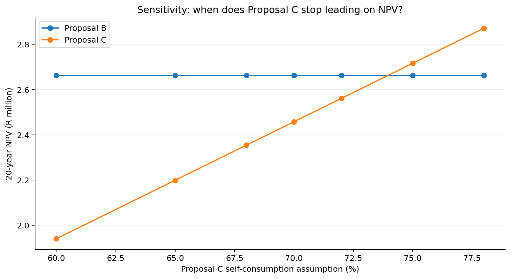

03 · Test
Case study · Cape Manufacturing · Operations challenges the assumption
Your Year-1 comparison favours A for the fastest payback. The next question is long-term value: the supplied 20-year model puts C ahead under the base assumptions, but that result depends on how much solar output the factory can use.
Stage outcome and evidence
Outcome for this stage: Evaluate the sensitivity of an investment decision to a material operational assumption and interpret the implications for management.
Evidence: completed Test Assumptions!A7:E14, crossover interpretation and an evidence requirement concerning the factory load profile.
Course guidance · compare payback and NPV
“Will we really use 78% of System C’s output?”
Simple payback favours System A at about 2.92 years. A 20-year discounted cash-flow view tells a different story: under the base assumptions, System C has the highest NPV at about R2.871 million.
Why? Payback focuses on recovery speed. NPV considers the value today of future net savings over the full analysis period.
Hold the assumptions for A and B fixed while varying C’s self-consumption. This isolates the effect of the operational uncertainty.
Decision question
Does System C still create the most long-term value if Cape Manufacturing cannot use as much of its solar output as the supplier expects?
Excel instruction · sensitivity table
Work on the Test Assumptions sheet
The scenario rates are already entered in A8:A14: 78%, 75%, 72%, 70%, 68%, 65%, 60%.
The NPV engine and highest-NPV formula are already supplied in B8:E8 of the student workbook. You do not need to transcribe them.
- Select
D8and inspect the Formula Bar. Find$A8: this links C’s self-consumption to the scenario in column A. Dollar signs keep the column fixed when the formula is copied. - Select
B8:E8and drag the fill handle down through row 14. InspectD9: the scenario reference should now be$A9, while the Case Data references remain fixed. - Format
B8:D14as rand currency with no decimals. A and B should remain unchanged; only C’s self-consumption varies. - Identify the two scenario rates between which B overtakes C. Refine the estimate by temporarily entering 74%, then 73.9%, in
A14. Watch D14 and E14 recalculate; then restore A14 to 60%.
Google Sheets compatibility: select B8:E14 and use Fill down if dragging is difficult; use Format → Number → Currency for the results.
Advanced: How the NPV engine works
For each of 20 years, the supplied formula calculates generation after degradation, multiplies it by self-consumption and the escalating tariff, then subtracts escalating maintenance. It discounts each year-end net saving to today and subtracts the initial installed cost at time zero. The workbook expands these annual terms explicitly, so each term can be inspected in the Formula Bar.
A and B use fixed base-case self-consumption. C uses $A8, which becomes $A9 when filled down. All other case inputs are anchored. The 20-year horizon is fixed for this activity.
The supplied =CHOOSE(MATCH(MAX(B8:D8),B8:D8,0),"A","B","C") identifies the highest NPV. In an exact tie it returns the first matching proposal; inspect the values when interpreting the crossover.
Check your answer · sensitivity results
| C self-consumption | Expected NPV C | Highest NPV |
|---|---|---|
| 78% | ≈ R2.871m | System C |
| 75% | ≈ R2.716m | System C |
| 72% | ≈ R2.561m | System B |
| 70% | ≈ R2.458m | System B |
| 68% | ≈ R2.355m | System B |
| 65% | ≈ R2.199m | System B |
| 60% | ≈ R1.941m | System B |
Formative checkpoint · find the crossover
Compare columns C and D in rows 8:14. Find the interval where the ranking changes.
Check your answer
System B overtakes System C at approximately 74% self-consumption. The modelled crossover is about 73.96%.
Interrogate the assumption, not just the number
Which would be more useful for validating self-consumption: annual electricity consumption, or half-hourly load data aligned with expected solar production?
Why half-hourly data?
Self-consumption depends on when electricity is used relative to solar generation. Annual totals can conceal a mismatch between midday PV production and the factory’s load profile.
Completed: completed sensitivity table Test Assumptions!A7:E14 and a reasoned view on the operational data management still needs.
Next: turn conflicting evidence and uncertainty into an executive recommendation.
